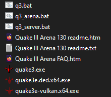

Fitxers
Aquesta és una llista de fitxers importants que us trobareu al descomprimir el joc:
- q3.bat serveix pels clients el qual l'han d'obrir (i ignorar l'avís d'administrador, poden jugar normalment) si demana clau no escriviu res i pitgeu OK, l'exe no funciona clients obriu aquest!
- q3_server.bat serveix pels admins, obriu-lo amb administrador en la VM (o amb administrador a un PC normal profes!) i el servidor s'obrira sol i ja podreu jugar.
- Dins de la carpeta baseq3 hi ha un fitxer txt amb mapes anomenat "maps.txt" el que està configurat per canviar de mapa després de cada partida aquí adjunto el meu exemple: MAPES
- Admins us hauria de sortir una pantalleta del servidor! No la tenqueu i si voleu podeu obrir q3.bat per jugar desde la mateixa màquina servidor.

Setup i connexió
Passos per connectar-se al server

- Obrir el joc i anar a setup

- Anar a player

- Configurar el vostre nom i seleccionar un color (cambia el color del raig de l'sniper)

- Seleccionar un model per el vostre jugador, són gratis nois!

- Tornar enrere fins al menu principal i sleccionar multiplayer

- Seleccionar specify

- Introduir la IP de la màquina servidor NO CAMBIEU EL PORT, fer click a FIGHT i a disfrutar!!!